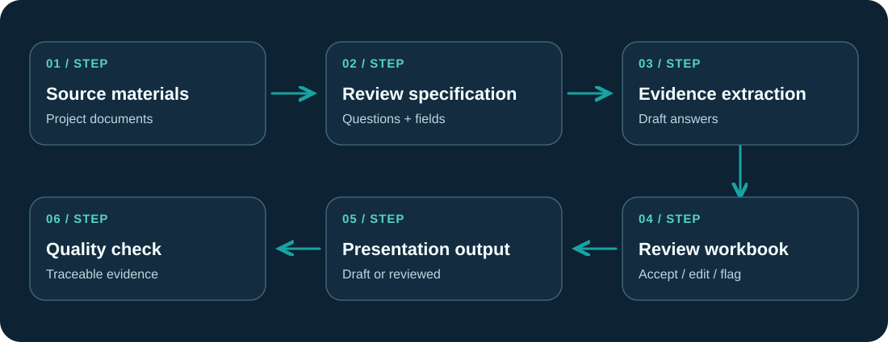

Specification-driven workflow
A structured list of topics, required fields and evidence questions defined what information the review package needed.
A reviewable path from source evidence to presentation output.
A human-in-the-loop concept for turning source documents and a structured review specification into an editable milestone presentation.
Preparing milestone reviews can require combing through many sources and repeatedly transferring facts into standardized presentation templates. The design goal was to reduce repetitive work without taking control away from reviewers.
Worked on AI-supported content generation, evidence traceability, review workflows and evaluation-oriented design.
The diagram simplifies the key ideas into an original, conceptual workflow—not a reproduction of internal architecture.

Conceptual architecture · Simplified for public communication · Not a proprietary diagram
Concrete technical responsibilities, without private code or configuration details.
A structured list of topics, required fields and evidence questions defined what information the review package needed.
An optional AI step proposed answers from source excerpts so reviewers could inspect and correct the content.
Users could review missing or inapplicable items before generating different presentation states, with longer material handled through continuation content.
A structured checkpoint makes missing facts and uncertain claims visible before final presentation export.
A confident generated statement is not enough; reviewers need to see whether the source actually supports it.
Source selection, passage capture, and answer completeness need separate checks; a model evaluating its own limited evidence may miss omissions.
The provided documents describe the proposed workflow and evaluation framework. Those evaluation measures should not be mistaken for measured production results.
Workflow and engineering design documentation. No general accuracy, customer impact, or time-savings claims are made here.
This case study is a high-level presentation of selected work. It does not disclose proprietary diagrams, internal configurations, private datasets, credentials or confidential business information. Publication should still be checked against applicable employer policies.